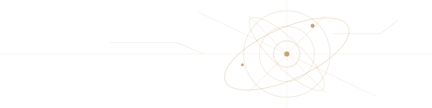

Morph / Junction 2026A new perspective on physical intelligence.
Your next instruction.
A shared language for the operator and the machine.
Static design reference. The composer has no submission behavior.

Morph / Junction 2026A new perspective on physical intelligence.
A shared language for the operator and the machine.
Static design reference. The composer has no submission behavior.